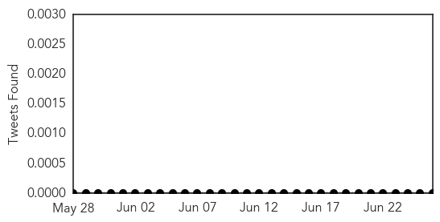

Chikungunya
30-Day Web Trend
9 alerts, 6 warnings

30-Day Twitter Trend
0 alerts, 0 warnings

Article Locations

Article Confidences

Top Articles:
- 0.997
- 17 chikungunya cases confirmed in Suriname, widespread infection expected
- 0.996
- UPDATE: Caribbean Mosquito-Borne Virus Infects Two Michigan Resi
- 0.994
- Case of Caribbean disease reported in Manatee
- 0.992
- Chikungunya out of control in St Lucia -- Authorities
- 0.991
- First case of chikungunya, a nasty, mosquito-borne virus, reported in Alabama.
- 0.981
- Mosquito-borne chikungunya fever reported in Sarasota County
- 0.975
- Chikungunya cases top 136,000
- 0.932
- Chikungunya Update - Antigua and Barbuda
- 0.804
- First cases of chikungunya fever reported in Manatee, Sarasota
Top Tweets:
-
No tweets found for Jun 26, 2014
Hepatitis
30-Day Web Trend
0 alerts, 0 warnings

30-Day Twitter Trend
0 alerts, 0 warnings

Article Locations

Article Confidences

Top Articles:
-
No articles found for Jun 26, 2014
Top Tweets:
-
No tweets found for Jun 26, 2014